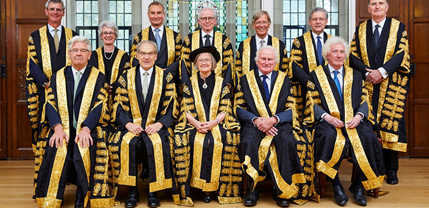

2020-10-22 08:00

If he manages to be elected, Joe Biden must add at least two Supreme Court justices. I would welcome his choice of Barack Obama for one new seat and Merritt Garland for the other.
Adding justices is what should happen if Republicans jam through the appointment of an “originalist” judge who is also a member of a cult featuring handmaids.
Of course, not everybody thinks expanding the Supreme Courts is a great idea. Some Democrats — including Biden himself — fear the sky would fall if such an audacious thing were done.
But given that the Republicans have been packing lower courts for years, maybe we need to trade in “Hope and Change” for some “Audacity and Change.” The threat of so-called “court packing” would send a chilling message to Republicans pondering Trump’s eclipse — do it and see what happens.
But forget about Barrett’s cult for a moment. Shouldn’t we restore some religious balance to the highest court in the land? 63% of Supreme Court Justices are already Catholic in a country where only 23% identify as such. If Barrett is confirmed that number would hit 75%. Many American Catholics don’t even share the views of their more conservative co-religionists on the Court. And more Americans than ever check off “none” in the religious box.
Expanding the Court is hardly a new idea. Donald Trump’s next favorite president (after himself, of course) is Andrew Jackson, who added two justices to the Court in 1836.
There is also nothing sacred about nine justices or lifetime presidential appointments. The way justices are appointed in other Western nations puts our process to shame.
The Supreme Court of Canada is appointed by the Governor in Council and consists of nine justices. The number started out as six, was bumped up to seven, and ultimately nine. On the surface theirs looks like ours, but Canada’s Supreme Court Act requires that three judges come from Ontario, three from Quebec, two from the Western provinces or Northern Canada and one from the Atlantic provinces. And Judges must also retire before their 75th birthdays.
The Supreme Court of the United Kingdom has twelve justices and they must have already served on the bench for 15 years, or 2 on a “federal” bench. The UK convenes a selection commission chosen from judiciaries in Britain, Scotland, Northern Island and Wales, and it strives for balance. After selection, a justice is formally appointed by the Queen. Even with 12 justices that number can still be increased. Justices must retire at 70 or 75, depending on when they joined the bench.
The German Federal Constitutional Court (Bundesverfassungsgericht, or BVerfG), has sixteen justices divided a couple of ways into two senates and three chambers. Judges are elected by both the Bundestag and the Bundesrat, each of which selects eight justices. A Justice must have previously held a position on the bench and be at least 40 years of age. Justices serve for 12 years or until the age of 68, whichever comes first.
The French Court of Cassation is the highest appeal court in France and has an elaborate system of chambers and sitting and administrative judges, but 15 justices head up the court. These 15 judges serve a 9 year term and 3 each are appointed by the President of the Republic, the Senate and the National Assembly presidents. To become a judge, a lawyer must be admitted to the Supreme Court Bar after passing an exam from the National School of the Magistracy. Typically, candidates are already judges in lower courts.
Our Supreme Court selection process is a mess. Not only is it highly politicized, but it lacks regional and demographic representation, professionalism, and justices typically serve well past normal professional expiration dates. More importantly, our selection process is simply undemocratic.
We need a serious re-think of the selection process, as well as term limits for the Supreme Court. And there are plenty of places to look for better ideas, starting with some of our closer allies.
But in the interim, let’s expand the Supreme Court.